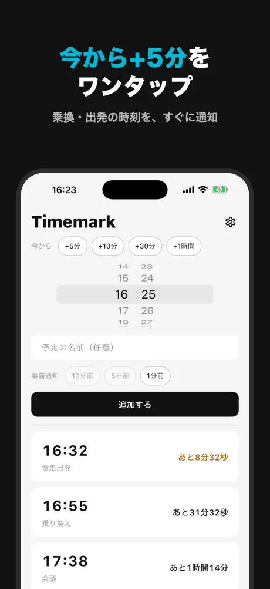
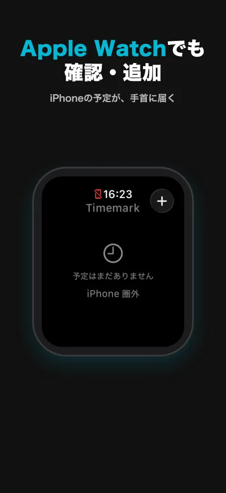

「今から何分後」を、
ワンタップで通知。
乗換・出発・会議の時刻を、すぐに入れて忘れない。
App Store で入手（無料）

こんな時に
電車で降りる駅の1分前に通知
- どんな時
- スマホに集中していて、降りる駅を乗り過ごしそう
- タップ
- 降りる駅に着く時刻を「+10分」などで入れる→「1分前」→「追加する」
- 起きること
- 着く1分前に「あと1分」と通知。残り時間は一覧とロック画面に表示
コインパーキングの時間を「1時間後」に通知
- どんな時
- 駐車場の料金が上がる前に車に戻りたい
- タップ
- よく使う「駐車場」→「+1時間」→「追加する」
- 起きること
- 1時間後に通知。残り時間は一覧で確認
大事な会議を5分前に通知
- どんな時
- 作業に集中していても、大事な会議を忘れたくない
- タップ
- よく使う「会議」→「+10分」→「5分前」→「追加する」
- 起きること
- 5分前に「会議 まであと5分です」と通知
パスタの茹で時間・洗濯の終わりを通知
- どんな時
- 料理や洗濯の「何分後」を、手を止めずに入れたい
- タップ
- よく使う「パスタ」→「+5分」→「追加する」
- 起きること
- 時刻になったら通知。Apple Watchでも残り時間を確認
01すぐ入力
「+5分」「+10分」「+30分」「+1時間」をタップするだけで時刻が入り、その時刻に通知します。
02ロック画面で「あと何分」
次の予定と残り時間を、ロック画面とダイナミックアイランドに表示。アプリを開かずに確認できます。
Timemark Plus03Apple Watch 対応
手首で予定を確認できます。Watch から追加・削除もできます。
よくある質問
Timemarkとは何ですか？
「今から何分後」に特化した、iPhoneの時刻通知アプリです。「+5分」「+10分」「+30分」「+1時間」をタップするだけで、その時刻に通知します。
無料で使えますか？
無料で使えます。タイマーの無制限の追加、10分前・5分前・1分前の事前通知、ロック画面の残り時間表示、よく使う予定は、買い切りのTimemark Plusで使えます。一度購入すれば追加の支払いはありません。
ロック画面で残り時間を確認できますか？
Timemark Plusで、次の予定と残り時間をロック画面とダイナミックアイランドに表示できます。アプリを開かずに確認できます。
Apple Watchで使えますか？
Apple Watchに対応しています。手首で予定を確認でき、Watchから追加・削除もできます。
どんな場面で使えますか？
降りる駅の1分前、コインパーキングの時間、大事な会議の5分前、パスタの茹で時間や洗濯の終わりなど、「何分後」を手早く通知したい場面で使えます。